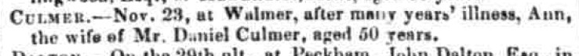
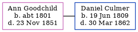

Ann Culmer (née Goodchild) c1801 - 1851
[ Home ] | [ Calendar ] | [ Surnames Index ] | [ Errors ] | [ Family History ]Ann Goodchild, the wife of Daniel Culmer (the four times great-uncle of Nigel Horne), was born c. 18011,2. She married Daniel (a butler) in Eastry, Kent, England around Feb 18423.
She died on 23 Nov 1851 in Walmer, Kent, England2 and was buried there on 30 Nov 18512,4.
Citations
- England Deaths & Burials 1538-1991 - Findmypast
- Kent, Canterbury Archdeaconry Burials - Findmypast
- England & Wales Marriages 1837-2005 - Findmypast
- England Deaths & Burials 1538-1991 - Findmypast
Media
Kentish Gazette - 2 December 1851

England Deaths & Burials 1538-1991 - R_276640258
Family Tree
Map
Generated by ged2site. Last updated on Jul 3, 2024
Known Issues
Date of birth is known, but not place